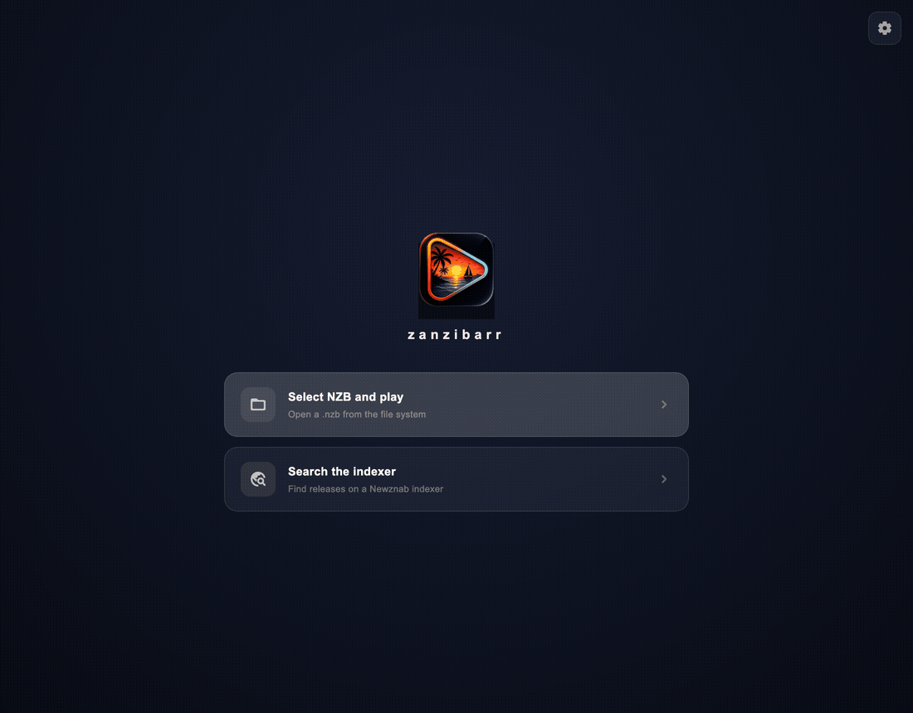

zanzibarr
Stream anything from Usenet. Own nothing. Wait for nothing.
Point it at any .nzb and the video starts in seconds — no download queue, no waiting, no disk space sacrificed.

Why zanzibarr
An engine, not a downloader
Everything heavy — parsing, yEnc, archive surgery, NNTP — is Rust. Everything you touch is Flutter. The engine only ever fetches the slices you actually watch.
{{ f.title }}
{{ f.body }}
Under the hood
How it works
Every seek position is mapped to the exact Usenet segments that hold it — decoded, verified and served through a lazy, range-aware local stream.
Screenshots
Dark, quiet, out of the way
A native interface that stays invisible until you need it — on desktop and on the couch.
Download
Free for every screen
{{ version }} — open source, no accounts, no telemetry. You bring your own Usenet provider and NZB sources; zanzibarr is the player, not the library.
Localization
Speaks your language
Fourteen fully localized interfaces — with proper RTL layout — plus dark and light themes.
Support the project
zanzibarr is free and open source, built in spare time. If it saved you a download queue, you can buy the next coffee that funds the engine — one-off or monthly, both keep the commits coming.
Become a patronRoadmap
Where this is going
- {{ r.text }}